#Dragon appearances
Browse the supplied appearance renders by dragon type. Light Dragon variants are omitted.
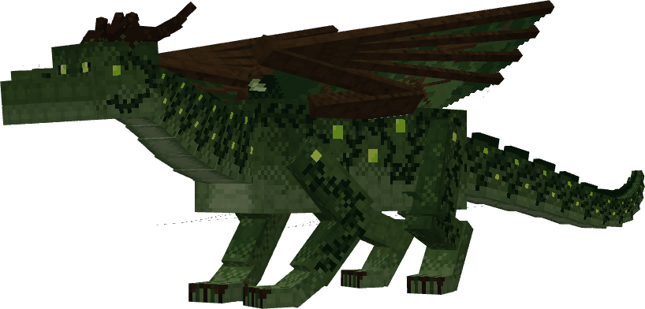
#All 17 species
Egg thumbnails and quick facts below follow the official Dragons guide. For full stats, variants, and mechanics, use that source.
| Dragon | Egg | Breath | Nest or egg source |
|---|---|---|---|
| Forest Dragon | 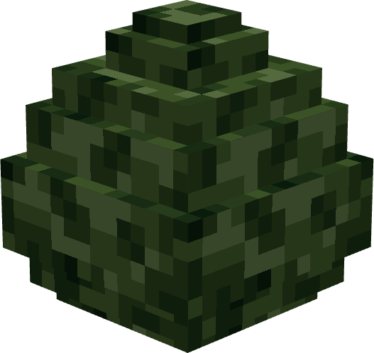 | Poison | Overworld: forests, jungles and flower forests |
| Aether Dragon | 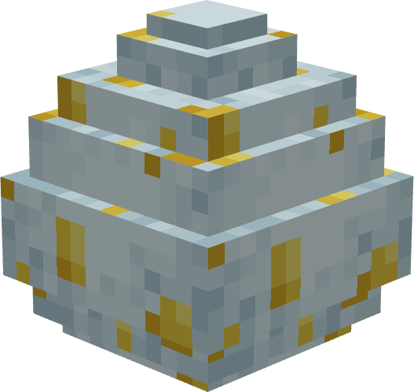 | Levitation | Overworld: most biomes except Mesa |
| Fire Dragon | 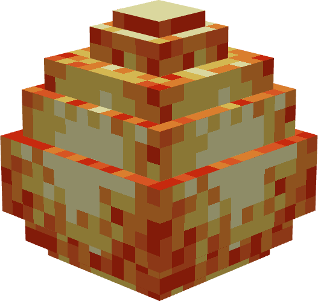 | Fire | Overworld: desert, plains, dripstone caves and plateaus |
| Ice Dragon | 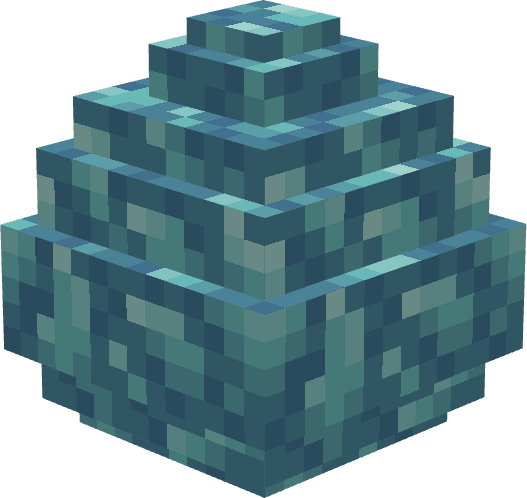 | Ice | Overworld: frozen biomes |
| Dark Dragon | 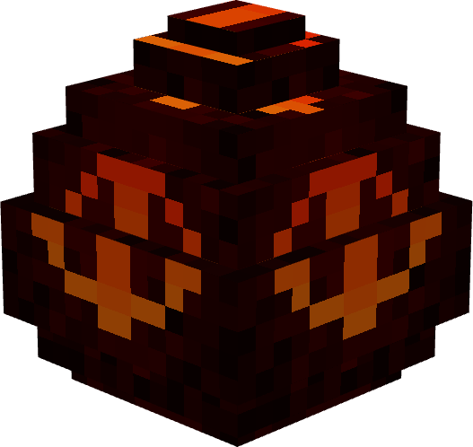 | Dark | No natural nest; transform a Moonlight egg with lightning |
| Enchant Dragon | 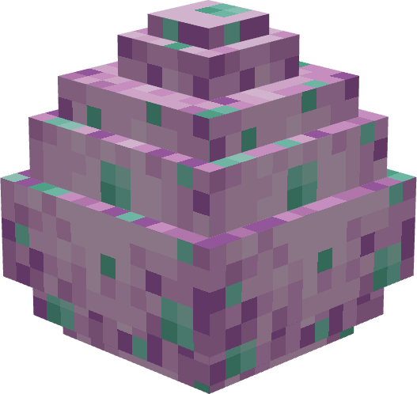 | Fire | The End: End biomes |
| Ender Dragon | 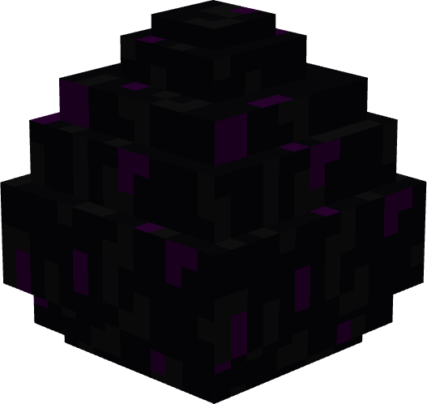 | Ender | Convert the vanilla Ender Dragon egg |
| Moonlight Dragon | 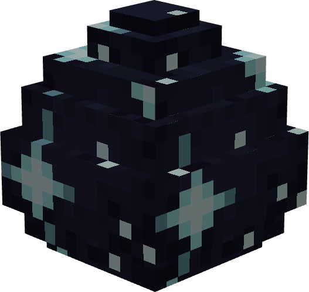 | Dark | Overworld: cold and deep oceans, and rivers |
| Nether Dragon | 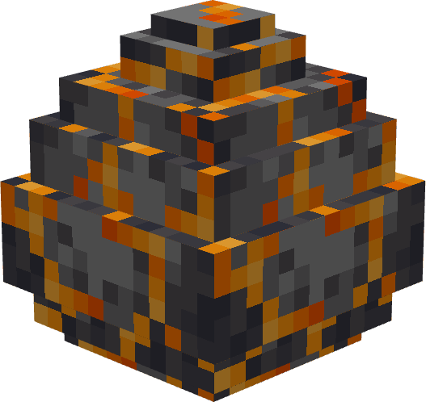 | Nether | Nether: all biomes |
| Sculk Dragon | 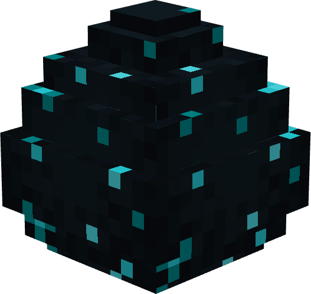 | Wither | Overworld underground: Deep Dark only |
| Skeleton Dragon | 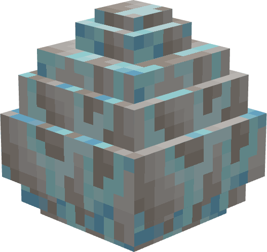 | Melee only | Nether: all biomes |
| Storm Dragon | 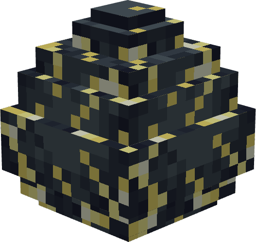 | Air | No natural nest; transform a Water egg with lightning |
| Sunlight Dragon | 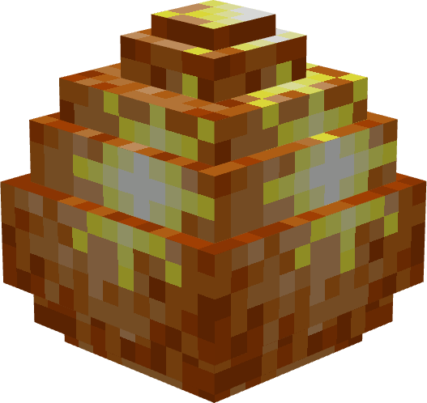 | Fire | Overworld: desert and desert hills |
| Terra Dragon | 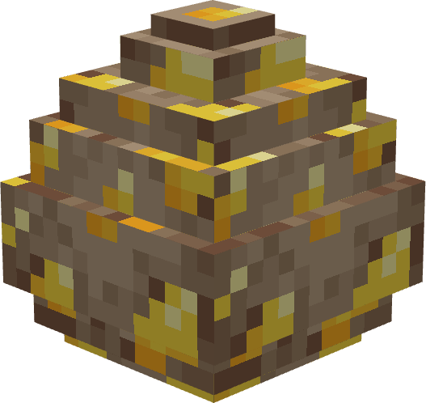 | Fire | Overworld: Mesa / Badlands |
| Water Dragon | 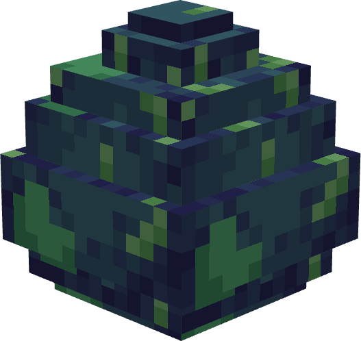 | Water | Overworld: oceans and swamps |
| Wither Dragon | 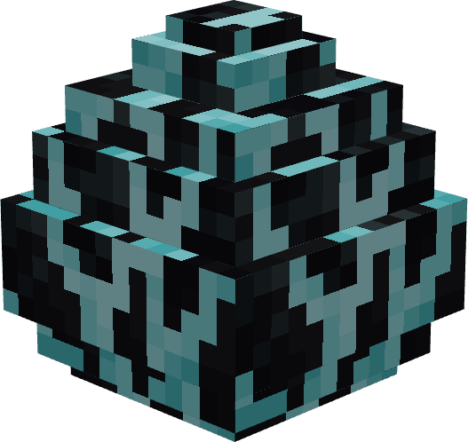 | Wither | No natural nest; transform a Skeleton egg with lightning |
| Zombie Dragon | 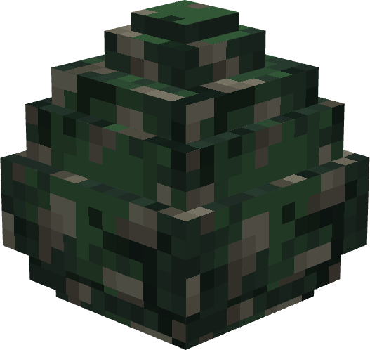 | Poison | Nether: all biomes |